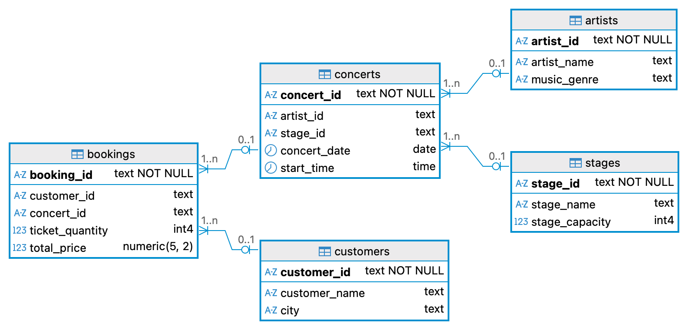

The Databases Review
← Back
Home
/
Topic 13
/
Case Study — Schema Diagram
☽
Reference · Topic 13
Case Study — Schema Diagram
A visual reference for the case study's database schema.
CMPU2007
Databases 1
1 min read
1 sections
Contents
01
Week 10 case study schema
01
Week 10 case study schema
